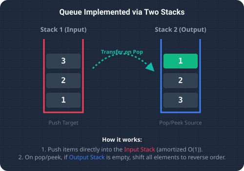

In computer science, stacks and queues represent the two most fundamental linear data structures, distinguished by their element access patterns. A Stack operates on a Last-In, First-Out (LIFO) basis, while a Queue operates on a First-In, First-Out (FIFO) basis.
A popular technical interview question challenges developers to implement a standard FIFO queue using only two LIFO stacks. The queue must support four standard operations:
push(x): Appends elementxto the back of the queue.pop(): Removes and returns the element at the front.peek(): Returns the element at the front without removing it.empty(): Returns a boolean indicating whether the queue is empty.

To understand how we can convert LIFO to FIFO using two stacks, imagine a cafeteria tray dispenser. Cafeteria trays stack on top of each other. If you stack trays labeled 1, 2, and 3 into Dispenser A, tray 3 sits at the top (Last-In).
However, customers want the tray at the bottom (1) because it was placed there first (FIFO).
To solve this:
- You grab a second empty tray dispenser (Dispenser B).
- You transfer the trays from Dispenser A to Dispenser B one by one.
- This action completely reverses their order! Tray
3goes to the bottom of Dispenser B, tray2sits in the middle, and tray1(the oldest tray) is now at the top. - Customers can now take trays directly from Dispenser B.
The Algorithmic Strategy
To implement this logic, we maintain two stacks in Java:
inputStack: Serves as the write buffer. Every call topush(x)simply pushes the element onto this stack.outputStack: Serves as the read buffer. Calls topop()andpeek()draw elements directly from the top of this stack.
pop() or peek()) is requested:
- If
outputStackcontains elements, we pop or peek from it immediately. - If
outputStackis empty, we transfer all elements frominputStacktooutputStackusing a loop:outputStack.push(inputStack.pop()). This reverses the elements, placing the oldest elements at the top. We then complete the read operation fromoutputStack.
Step-by-Step Scenario Walkthrough
Let's trace a series of actions:
- Push 1, then Push 2: Elements are added to the write buffer:
inputStack = [1, 2],outputStack = []. - Peek: Since
outputStackis empty, we transfer elements:- Pop
2frominputStackand push tooutputStack. - Pop
1frominputStackand push tooutputStack. - States:
inputStack = [],outputStack = [2, 1]. - We peek at the top of
outputStack, returning1.
- Pop
- Pop:
outputStackis not empty, so we pop the top element, returning1. States:inputStack = [],outputStack = [2]. - Push 3: Add to write buffer:
inputStack = [3],outputStack = [2]. - Pop:
outputStackis not empty. We pop from it, returning2. States:inputStack = [3],outputStack = [].
Key Code Explanations
Here is why the main logic in the solution is important:
inputStack.push(x): Keeps the write path extremely simple and fastO(1).while (!inputStack.isEmpty()) outputStack.push(inputStack.pop()): The transfer logic that reverses the order of elements. By doing this lazily (only when the read stack is empty), we achieveO(1)amortized performance.inputStack.isEmpty() && outputStack.isEmpty(): Ensures we correctly track elements across both buffers before declaring the queue empty.
Java Implementation Code
Below is the complete, self-contained Java source code that solves this problem. It also includes a main method that traces the execution with console outputs.
package io.practise.dsa;
import java.util.Stack;
public class QueueUsingStacks {
public static class MyQueue {
private final Stack<Integer> inputStack = new Stack<>();
private final Stack<Integer> outputStack = new Stack<>();
/** Push element x to the back of queue. */
public void push(int x) {
inputStack.push(x);
}
/** Removes the element from in front of queue and returns that element. */
public int pop() {
shiftStacks();
return outputStack.pop();
}
/** Get the front element. */
public int peek() {
shiftStacks();
return outputStack.peek();
}
/** Returns whether the queue is empty. */
public boolean empty() {
return inputStack.isEmpty() && outputStack.isEmpty();
}
/** Helper method to transfer elements from input stack to output stack when empty. */
private void shiftStacks() {
if (outputStack.isEmpty()) {
while (!inputStack.isEmpty()) {
outputStack.push(inputStack.pop());
}
}
}
}
public static void main(String[] args) {
MyQueue queue = new MyQueue();
System.out.println("--- Implement Queue using Stacks Demonstration ---");
System.out.println("Pushing: 1");
queue.push(1);
System.out.println("Pushing: 2");
queue.push(2);
System.out.println("Peek (front of queue): " + queue.peek()); // Should be 1
System.out.println("Pop (removed front): " + queue.pop()); // Should be 1
System.out.println("Pushing: 3");
queue.push(3);
System.out.println("Pop (removed front): " + queue.pop()); // Should be 2
System.out.println("Is Queue empty? " + queue.empty()); // Should be false
}
}Conclusion & Complexity Analysis
By lazily shifting elements from the input stack to the output stack, we ensure that each element is pushed and popped at most twice. This yields an amortized time complexity of O(1) per operation, and a space complexity of O(N) to store the elements. This is the most optimal way to implement a FIFO contract using LIFO components.